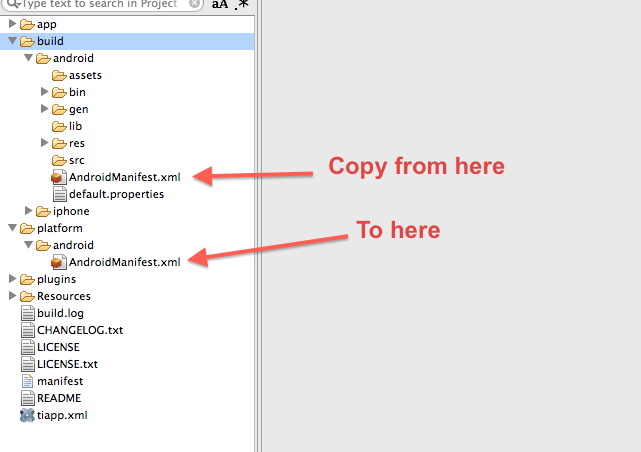

Android API Deep Dive
Titanium Certified Expert (TCE) Training
In this lesson, you will:
- Identify the strength and weaknesses of the Android platform
- Explore Android components and vocabulary
- Configure Android apps using native configuration techniques
- Implement Android UI APIs
- Implement Android non-visual APIs
Android Platform Strengths
- Open nature (hackable)
- Variety of app distribution methods
- Range of devices: low-cost to high-end
- Java-based environment (common skill set)
- Strongly integrated into the Google ecosystem (identity, Google Apps, data sharing)
Android Platform Weaknesses
- Slow OS upgrades on user devices
- Carrier themes add a layer of complexity in UI design
- Large distribution of device screen types, hardware capabilities, etc.
- Open nature (hackable)
- Less active app economy (fewer 99-cent purchases)
Many devices & form factors
Phones, tablets, various operating system versions, vendor skins, carrier add-ons, forked versions
Need to test as widely as possible ... on device
 Topic
Topic
Android Components
Android Application Key Components
- Activities
- Services
- Broadcast Receivers
- Intents
- Pending Intents
It is necessary to understand and implement these in Ti to provide a truly native experience
Activity
'An activity is a single, focused thing that the user can do. Almost all activities interact with the user, so the Activity class takes care of creating a window for you in which you can place your UI'
http://developer.android.com/reference/android/app/Activity.html
Service
'A Service is an application component representing either an application's desire to perform a longer-running operation while not interacting with the user or to supply functionality for other applications to use.'
http://developer.android.com/reference/android/app/Service.html
Broadcast Receiver
'A broadcast receiver is a component that responds to system-wide broadcast announcements'
http://developer.android.com/reference/android/content/BroadcastReceiver.html
Intent
'Three of the core components of an application - activities, services, and broadcast receivers - are activated through messages, called intents.'
http://developer.android.com/guide/topics/intents/intents-filters.html
Pending Intent
A Pending Intent is an intent you give to another application to perform on your app's behalf at a future time.
http://developer.android.com/reference/android/app/PendingIntent.html
All of these work in Titanium

Topic
Android Configuration
AndroidManifest.xml
- Native configurations done in AndroidManifest.xml
- Most of those properties can be set in the tiapp.xml
- Or, use a custom AndroidManifest.xml
- Examples: app permissions, orientation handling, version number customization, native themes, tooling, etc.
Configuration in Tiapp.xml

- Build once to generate stock build/android/AndroidManifest.xml
- Copy pertinent tags from generated file
- In tiapp.xml, edit
<android .../>to be block rather than closed tag - Add
<manifest></manifest>tags - Paste in generated code, edit as needed
Custom Android Manifest
Topic
Android UI APIs
Windows
- Lightweight == full-screen view
- Heavyweight == Activity
- Title bar only with Heavyweight windows
- No pre-built animations like with iOS
"#win": {
fullscreen: false,
navBarHidden: false,
modal: false,
windowSoftInputMode: Ti.UI.Android.SOFT_INPUT_ADJUST_PAN
}
Guides > Building Mobile Apps > Cross-Platform Mobile > Android Platform Overview
Hardware Menu

Menu Example - pre-ICS
var w = Ti.UI.createWindow({
backgroundColor : 'blue',
navBarHidden : false,
activity : {
onCreateOptionsMenu : function(e) {
var menu = e.menu;
var m1 = menu.add({ title : 'Close Window' });
m1.setIcon(Titanium.Android.R.drawable.ic_menu_close_clear_cancel);
m1.addEventListener('click', function(e) {
w.close();
});
}
}
});
ICS Menu Example - Manifest
<android xmlns:android="http://schemas.android.com/apk/res/android">
<tool-api-level>11</tool-api-level>
<manifest>
<uses-sdk android:targetSdkVersion="11"/>
<!-- other manifest entries -->
</manifest>
</android>
ICS Menu Example - Code
<Menu>
<MenuItem title="Compose" icon="/images/compose_icon.png"
showAsAction="Ti.Android.SHOW_AS_ACTION_IF_ROOM "
onClick="doSomething"/>
</Menu>
// or in code is still valid
$.win.activity.onCreateOptionsMenu = function(e) {
var menu = e.menu;
var menuItem = menu.add({
title : "Compose",
icon : "/images/compose_icon.png",
showAsAction : Ti.Android.SHOW_AS_ACTION_IF_ROOM
});
menuItem.addEventListener("click", function(e) {
Ti.API.info("Action Item Clicked!");
});
};
Using a 9-patch for the Splash Screen
- Create a 9-patch image using draw9patch utility
- Copy to platform/android/res/drawable[-xdpi]
- Rename it to splash.9.png
- Create a theme.xml file, put it in platform/android/res/values
<?xml version="1.0" encoding="utf-8"?>
<resources>
<style name="Theme.Titanium" parent="android:Theme">
<item name="android:windowBackground">@drawable/splash</item>
<item name="android:windowNoTitle">true</item>
</style>
</resources>
Installing to the SD card
- Use tool-api-level 8 or higher
- Set minSdkVersioin to 7 or higher
- Add the following to the AndroidManifest.xml
<android xmlns:android="http://schemas.android.com/apk/res/android">
<tool-api-level>8</tool-api-level>
<manifest android:installLocation="preferExternal">
<uses-sdk android:minSdkVersion="7" />
</manifest>
</android>
Android Labels
Much more capable than iOS Labels
Styling properties on creation same cross platform
Android can display inline HTML (basic formatting tags)
Android can display links inline (web, tel, maps)
Demo: Label gymnastics
Toast Notifications

Simple text display over all activities
Can control positioning on screen
Rendering will be different based on OS version and skin
var n = Ti.UI.createNotification({message:"Howdy folks"});
n.duration = Ti.UI.NOTIFICATION_DURATION_LONG;
// or NOTIFICATION_DURATION_SHORT
// Setup the X & Y Offsets
n.offsetX = 100;
n.offsetY = 75;
n.show();
Hijacking the Back Button
- Override default Back button behavior
- Example: wizard interface where you want to go back a screen
- Careful about user expectations
- Demo: AndroidBackDemo
Topic
Non-visual APIs
Launching Activities
You can launch other apps (activities) from JS
Need to have an intent object to pass
Many built in intents to use
Forging Titanium #9 - Android Intents Cookbook
Example
// create an Android intent whose action is to send plain text data
var intent = Ti.Android.createIntent({
action: Ti.Android.ACTION_SEND,
type: 'text/plain'
});
// define two extra fields for the intent
intent.putExtra(Ti.Android.EXTRA_SUBJECT, 'Isn\'t This Cool!');
intent.putExtra(Ti.Android.EXTRA_TEXT, $.message.value);
try {
Ti.Android.currentActivity.startActivity(intent);
} catch (ex) {
/* Handle Exception if no suitable apps installed */
Ti.UI.createNotification({ message : 'No sharing apps installed!' }).show();
}
Service Support
- Run JavaScript-based services in the background
- Must be started by your app, but can survive when you exit the app
- Runs on an interval you specify
- Can access many non-UI Titanium APIs (networking, eventing, etc.)
Example
// app/lib/logservice.js
// This is the service, use non-UI Ti APIs
Ti.API.info("Hello world, I'm a service");
<!-- tiapp.xml -->
<android xmlns:android="http://schemas.android.com/apk/res/android">
<services>
<service url="logservice.js"
type="interval"/>
</services>
</android>
// in index.js or other controller
var SECONDS = 10; // every 10 seconds
var intent = Titanium.Android.createServiceIntent({
url: 'logservice.js'
});
intent.putExtra('interval', SECONDS * 1000); // Needs to be milliseconds
Ti.Android.stopService(intent); // later, to stop the service!
Calendar and Event Integration
Android exclusive feature, can't do it on iOS
Add events to calendars, and alarms for status bar
Ti.Android.Calendar module
Application Resources
JS access to R.java - http://developer.android.com/reference/android/R.html
R.drawable - built in icons for ImageView, etc.
R.string - OS localized string for 'OK', 'Cancel', etc
Android docs required to see properties
Summary
In this lesson, you:
- Identified the strength and weaknesses of the Android platform
- Explored Android components and vocabulary
- Configured Android apps using native configuration techniques
- Implemented Android UI APIs
- Implemented Android non-visual APIs
Q&A
Lab Goals
- Share data with an Intent
- Hide the keyboard using the Android-specific technique
- Use the Android-specific technique to prevent the soft keyboard from covering the text area
- Install the app to the external storage location
wiki.appcelerator.org/display/td/350+-+Android+API+Deep+Dive